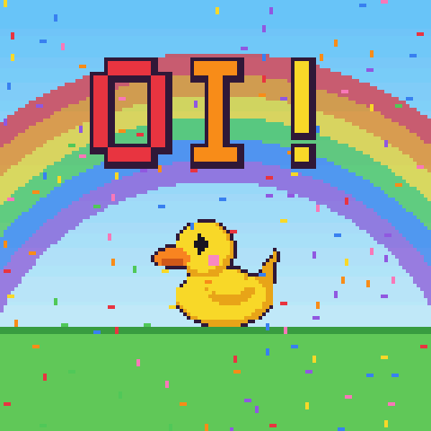
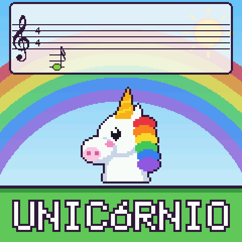
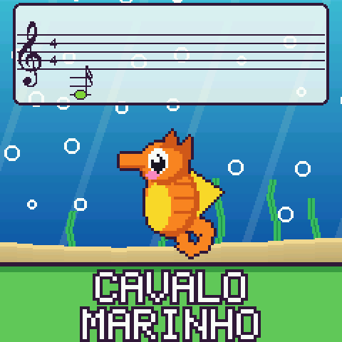
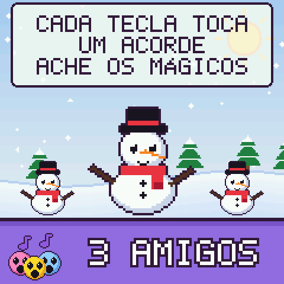
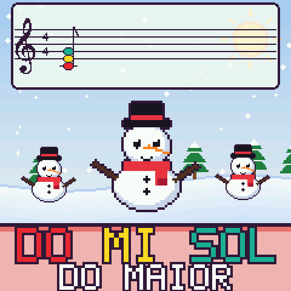
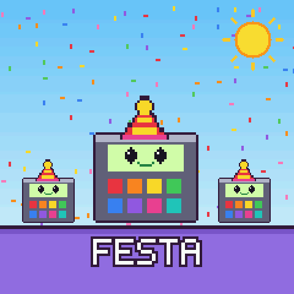

Rainbow mode
Um brinquedo musical para mãos pequenas, agora em português. É um firmware grátis que transforma o sintetizador M-VAVE FM-1 em algo que uma criança pequena consegue tocar. Nesta versão tudo na tela está em português, as notas aparecem em Dó Ré Mi, e o modo SIGA tem 15 cantigas brasileiras.
Não tem um FM-1? Dá para tocar mesmo assim, com as teclas na tela ou o teclado do computador. As páginas do instalador e do navegador ainda estão em inglês, mas o brinquedo fala português.
Na tela do FM-1

Oi!Um oi toda vez que liga

94 amigosGire PRESETS para conhecer todos

Nomes em portuguêsDo PATINHO ao CAVALO MARINHO

Um cartão para cada modoPara os adultos lerem junto

Dó Ré MiAté os acordes têm nome

ChapéusGanhe estrelas para abrir
O que tem dentro
- Cada tecla mostra a sua nota, grande e na sua cor, como os sininhos da aula de música. As notas aparecem em Dó Ré Mi. Quem preferir C D E segura HOME por um segundo e gira o KNOB 2.
- São 94 amigos, cada um com o seu desenho, som, céu e batida favorita. Patos, um unicórnio, um T-Rex, um caminhão de bombeiros com sirene, um piano que toca uma gravação de piano de verdade.
- O modo SIGA acende a próxima tecla de 20 músicas. São 15 cantigas brasileiras: Ciranda Cirandinha, Atirei o Pau no Gato, Marcha Soldado, Cai Cai Balão, Escravos de Jó, Peixe Vivo, Borboletinha, O Cravo e a Rosa, Pirulito que Bate Bate, A Canoa Virou, O Sapo Não Lava o Pé, Alecrim Dourado, Meu Limão Meu Limoeiro, Terezinha de Jesus e Boi da Cara Preta. E mais Brilha Brilha Estrelinha, Parabéns, Ode à Alegria, Bate o Sino e Noite Feliz.
- 21 batidas, do Disco e Reggae ao Lofi e ao Acid. A linha de baixo sempre combina com as teclas que a criança aperta.
- Tem jogos também. ADIVINHE é um jogo de ouvido. ACORDES ensina acordes, do primeiro DÓ MAIOR às sétimas. Em ME IMITE o amigo toca uma sequência e a criança repete.
- Cada jogo ganho vale uma estrela, e as estrelas abrem segredos. Com dez estrelas vem um chapéu novo. Com 25 aparece a aurora boreal.
- SAVE abre uma pauta grande para compor músicas. Cada tecla põe um amigo na pauta, e PLAY canta tudo de volta.
- Para os adultos: segure HOME e aperte OCT- ou OCT+ para limitar o volume, ou gire o KNOB 1 para a esquerda para esconder a pauta. Para sair do Rainbow mode, segure HOME e SAVE juntos por 3 segundos.
Experimente
No navegador
O mesmo firmware, direto no navegador. Funciona no computador, no celular e no tablet.
Abrir a demonstração Ligue o som. Talvez seja preciso tocar na tela uma vez para começar.Num M-VAVE FM-1
Ligue o FM-1 no USB e aperte Install. Leva mais ou menos um minuto.
Abrir o instalador Precisa do Chrome ou do Edge num computador ou celular Android, e de um cabo USB. Safari e iPhone não funcionam. Para voltar ao firmware oficial, o instalador tem a seção "Return to official V15".Obrigado
- u/Competitive_Tank_150, do Brasil, pediu as notas em Dó Ré Mi e as músicas brasileiras. Esta versão existe por causa desse pedido.
- As cantigas foram tiradas das partituras de flauta doce do Cifra Visual, todas em domínio público.
Achou uma palavra estranha ou quer outra cantiga? Conte para a gente no r/MVaveFM1.